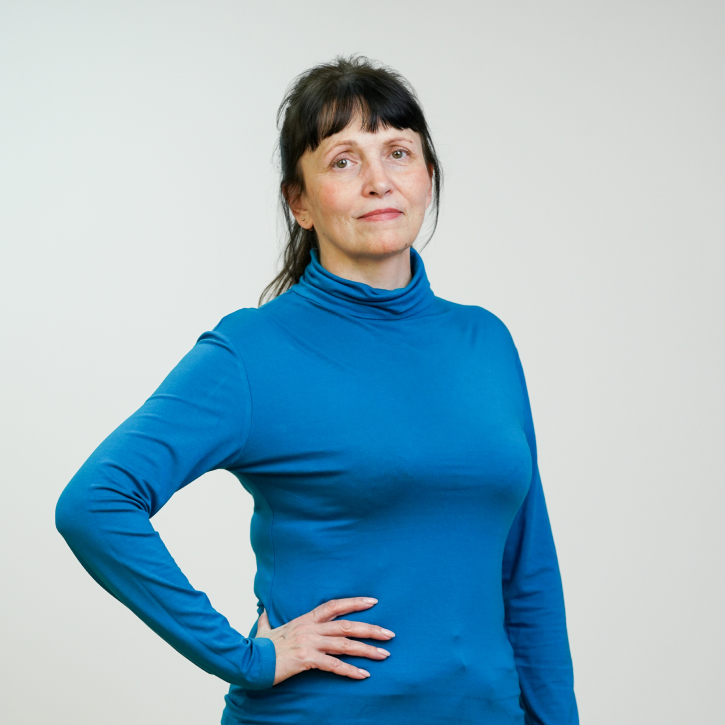
Ирина Авдеева
Кладовщик
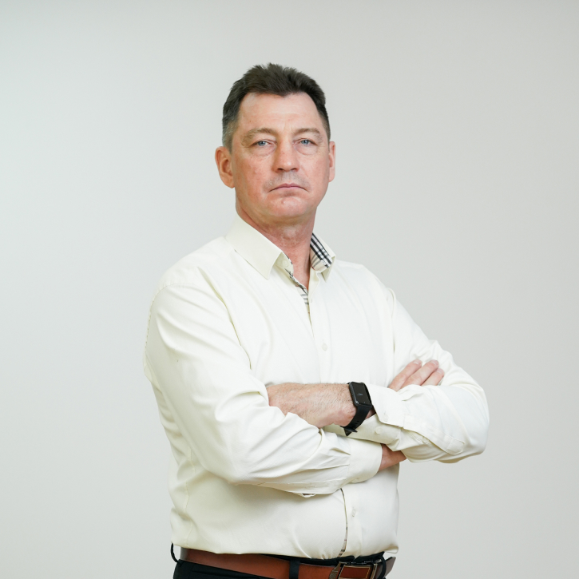
Евгений Арбатский
Водитель грузового автомобиля
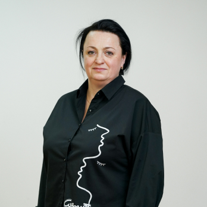
Надежда Бажина
Технолог
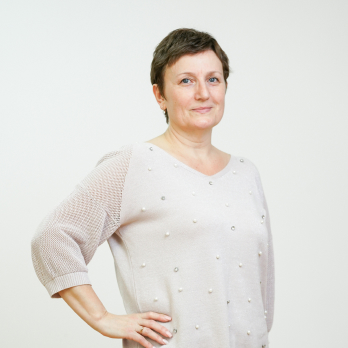
Ольга Бушуева
Инженер-микробиолог
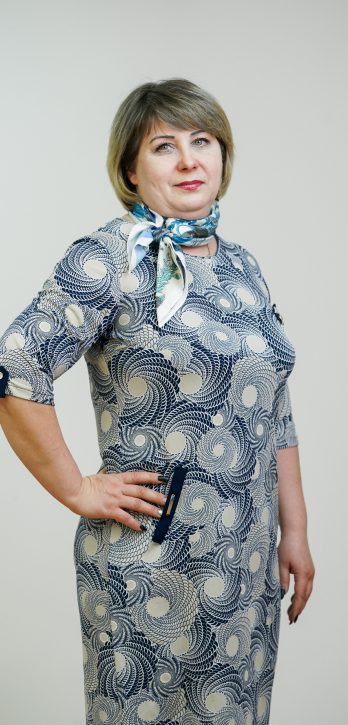
Екатерина
Владимирова
Владимирова
Техник-технолог 1-й категории
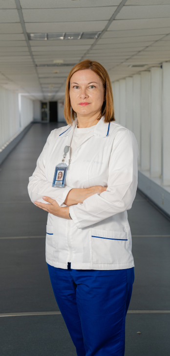
Виктория Гарбуз
Начальник производственной лаборатории
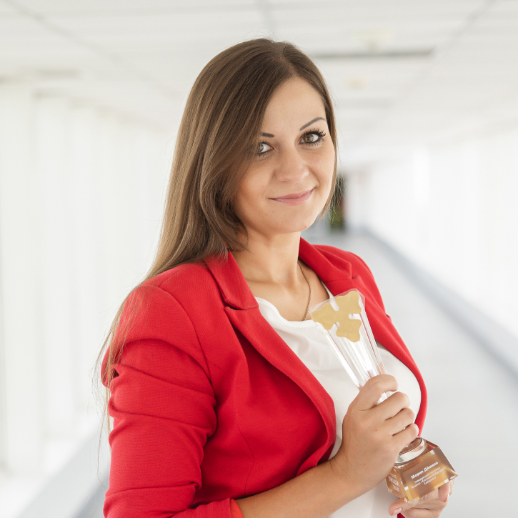
Мария Дёмина
Заведующий столовой

Татьяна Демидова
Менеджер по экологии
и рециклингу
и рециклингу
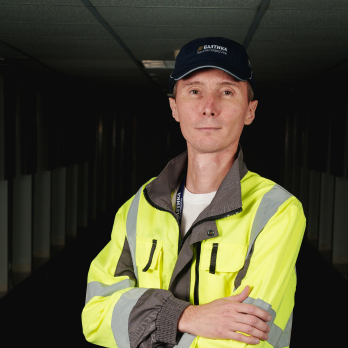
Игорь Егоров
Главный инженер
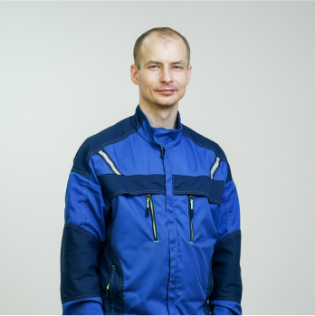
Владимир
Житников
Житников
Инженер-электроник 1-й
категории
категории
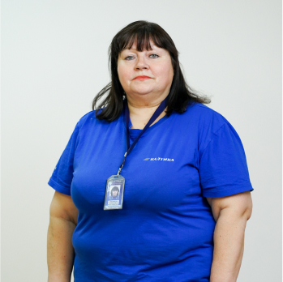
Валентина
Ключикова
Ключикова
Техник по учету складской логистики
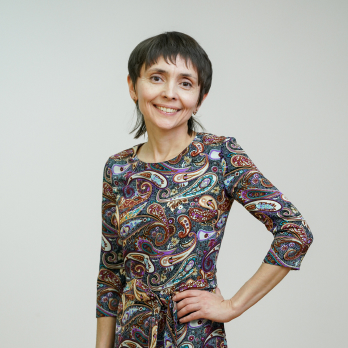
Яна Колиденкова
Инженер-химик
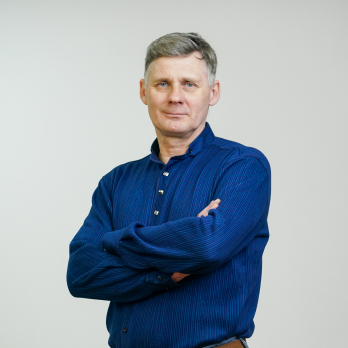
Константин
Кудрявцев
Кудрявцев
Слесарь-электрик
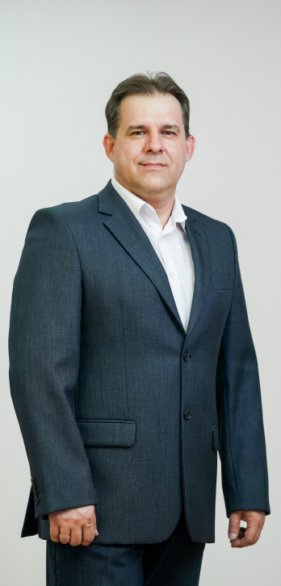
Дмитрий Никитин
Руководитель группы
технической поддержки
технической поддержки
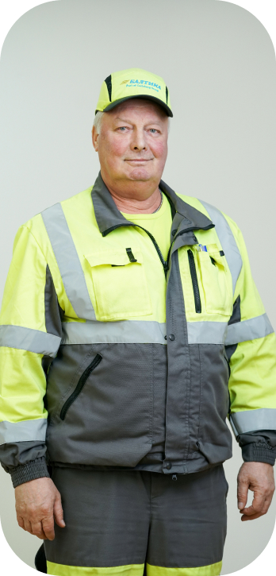
Игорь Новицкий
Водитель погрузчика
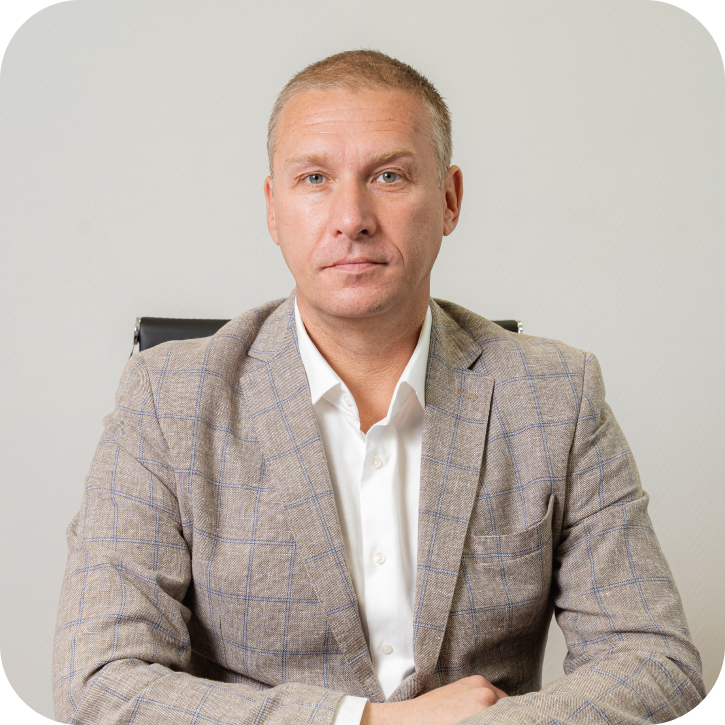
Антон Пеньков
Директор филиала «Балтика-Хабаровск»
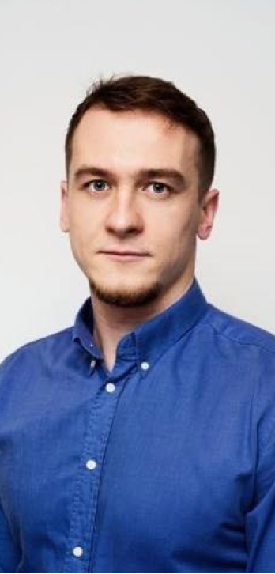
Александр
Пресняков
Пресняков
Руководитель
представительства компании
в Китае
представительства компании
в Китае
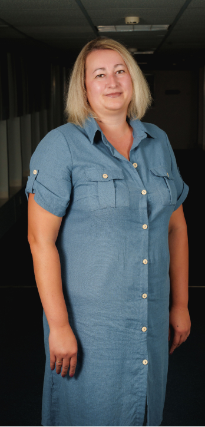
Надежда Семёнова
Ведущий специалист по
железнодорожным перевозкам
железнодорожным перевозкам
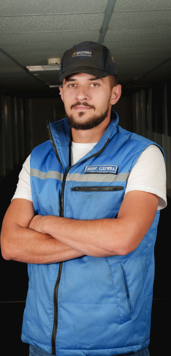
Николай Урупа
Главный энергетик
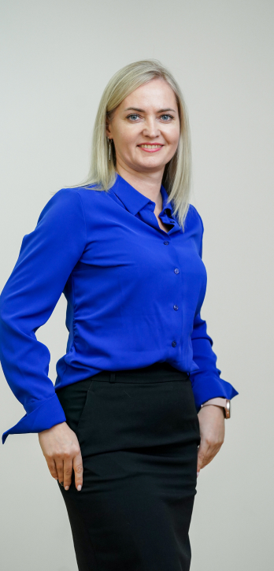
Алёна Шуст
Ведущий инженер-технолог
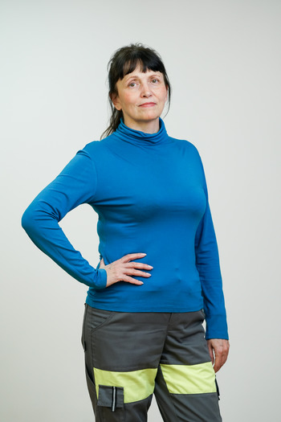
Ирина Авдеева
Кладовщик
Отвечаю за хранение
— «Балтика» — большая часть моей жизни. Я очень ценю
нашу компанию
за интересную работу, достойную зарплату, приятный коллектив. За 20 лет
я сменила много должностей.
Кладовщик — ответственная и интенсивная работа. На складе хранится много всего важного: и холодильники для торговых точек, и рекламные материалы, и инструменты для завода. Мне важно следить за тем, чтобы все складские позиции были в целости и сохранности.
Кладовщик — ответственная и интенсивная работа. На складе хранится много всего важного: и холодильники для торговых точек, и рекламные материалы, и инструменты для завода. Мне важно следить за тем, чтобы все складские позиции были в целости и сохранности.
Любимое пиво: «Балтика 0»
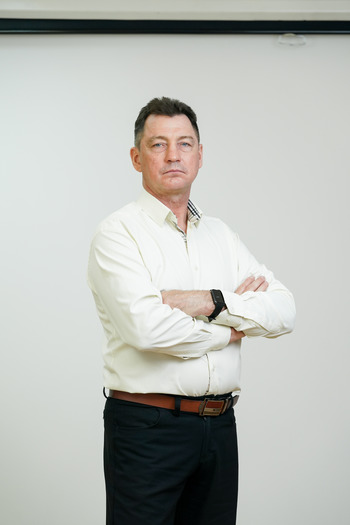
Евгений Арбатский
Водитель грузового автомобиля
Отвечаю за вывоз с завода отходов пивопроизводства
— Иногда в мои задачи входит доставлять материалы, которые необходимы для
работы завода.
От меня требуется аккуратно довезти груз и проконтролировать погрузку-разгрузку,
чтобы все было в целости и сохранности. Скучно не бывает: всегда езжу
на разных машинах, вожу разные грузы, строю разные маршруты. К тому же
я выступаю в роли наставника для молодых водителей. Люблю «Балтику»
за комфорт и приятные бонусы — никогда не забуду свою поездку
в Копенгаген.
Любимое пиво: «Балтика 7»

Надежда Бажина
Технолог
Отвечаю за процесс брожения пива
— Моя задача — сделать так, чтобы пиво было по-настоящему
«пенным».
Я работаю в бродильном отделении: мы задаем дрожжи в сусло, ведем
процесс брожения, следим за температурным режимом. У нас в цехе
12 сменных технологов, и мы все в хороших отношениях. Так важно, чтобы
атмосфера в коллективе была дружелюбная — у нас именно так.
Любимое пиво: S&R's Garage
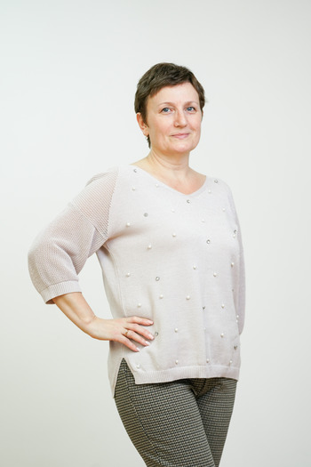
Ольга Бушуева
Инженер-микробиолог
Отвечаю за микробиологический контроль
— На нашем предприятии работаю 13 лет, а в производственной
лаборатории — 10 лет. Моя работа очень интересная. Мы проводим отбор
проб в цехе пивопроизводства: сусла, дрожжей, ферментов и других составляющих.
В цехе розлива берем мазки после промывки оборудования, изучаем посев воздуха,
контролируем все партии готовой продукции. Это важно, чтобы пиво оставалось вкусным
в течение всего срока хранения.
Любимое пиво: «Балтика 7 Мягкое»
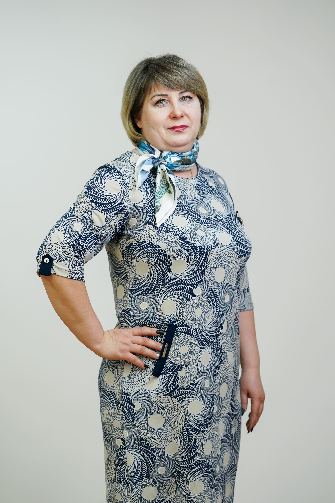
Екатерина Владимирова
Техник-технолог 1-й категории
Отвечаю за качество упаковки
— Я работаю на самой финишной прямой нашего производства —
на этикетировочном автомате линии «ПЭТ». До этого работала
на этикетировочном автомате линии «Стекло», потом была линия
«ПЭТ»: этикетировка, розлив, термоупаковка. Затем — розлив
линии «Банка». А начинала трудовую деятельность на заводе
с мойщицы оборудования. Обучение проходила без отрыва от работы, прямо
на «Балтике».
Кажется, будто наклеить этикетку — не самая важная задача. Но, во-первых, упаковка — лицо товара. Потребитель изначально обращает внимание именно на упаковку. Что касается оборудования по розливу, то от правильно соблюденной технологии напрямую зависит качество напитка.
Кажется, будто наклеить этикетку — не самая важная задача. Но, во-первых, упаковка — лицо товара. Потребитель изначально обращает внимание именно на упаковку. Что касается оборудования по розливу, то от правильно соблюденной технологии напрямую зависит качество напитка.
Любимое пиво: S&R's Garage>
и «Балтика 7 Мягкое»
и «Балтика 7 Мягкое»
Виктория Гарбуз
Начальник производственной лаборатории
Отвечаю за качество пива
— Для Хабаровска запуск филиала «Балтики» стал большим
событием — на тот момент в крае не было настолько крупных
и современных предприятий пищевой промышленности. Помню, когда я устраивалась,
из желающих работать здесь выстроилась огромная очередь. Чтобы просто попасть
на собеседование, я приезжала на завод три дня. А когда узнала, что меня
взяли, была очень рада.
Все 20 лет я отработала в лаборатории. Больше всего мне запомнился переход на позицию ведущего специалиста по качеству и пищевой безопасности. До этого я была инженером-химиком, а это несколько иное: я проводила физико-химический контроль ингредиентов, пива в процессе брожения и фильтрации. На другой позиции я занялась системами менеджмента качества.
Для меня это было абсолютно новым! Откровенно скажу, что первые полгода оказались очень напряженными. Тем более что именно тогда завод проходил сертификацию по пищевой безопасности. Но мы со всем справились!
Все 20 лет я отработала в лаборатории. Больше всего мне запомнился переход на позицию ведущего специалиста по качеству и пищевой безопасности. До этого я была инженером-химиком, а это несколько иное: я проводила физико-химический контроль ингредиентов, пива в процессе брожения и фильтрации. На другой позиции я занялась системами менеджмента качества.
Для меня это было абсолютно новым! Откровенно скажу, что первые полгода оказались очень напряженными. Тем более что именно тогда завод проходил сертификацию по пищевой безопасности. Но мы со всем справились!
Любимое пиво: «Балтика 7»,
ZateckyGus и «Дикий Восток»
ZateckyGus и «Дикий Восток»
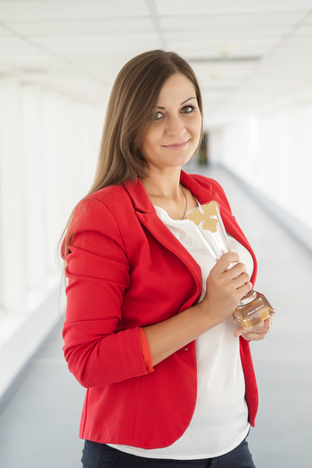
Мария Дёмина
Заведующий столовой
Отвечаю за питание сотрудников
— Я работаю на «Балтике» с 2006 года. Пришла
буфетчиком, потом была поваром, бухгалтером-калькулятором, и вот —
заведующая столовой. Получаю большую отдачу от работы с людьми. Обед —
мое любимое время: мне нравится выходить на раздачу, общаться с сотрудниками,
спрашивать у них, что бы они хотели видеть в меню, а что можно изменить.
Мой фаворит — суп с папоротником на основе говядины. Острота добавляет ему пикантности. Балтийцы Хабаровска это блюдо тоже очень любят! 😊
Мой фаворит — суп с папоротником на основе говядины. Острота добавляет ему пикантности. Балтийцы Хабаровска это блюдо тоже очень любят! 😊
Любимое пиво: «Балтика 0»
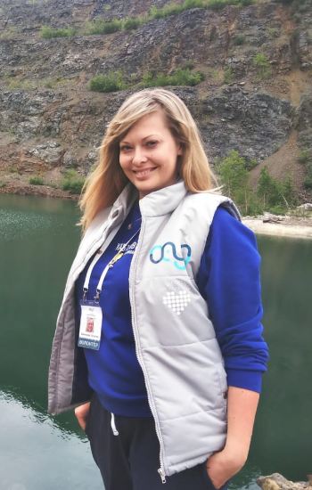
Татьяна Демидова
Менеджер по экологии и рециклингу
Отвечаю за экологичное производство
— Я люблю «Балтику» за стабильность, уверенность
в завтрашнем дне и заботу о своих сотрудниках. Как экологу мне важно, что
компания не экономит средств на охрану окружающей среды: это касается
и технологий на производстве, и биологических сооружений. Радостно видеть,
что коллеги с удовольствием подключаются к экологическим акциям.
Я и сама всегда поддерживаю любые инициативы в этом направлении —
например, участвовала в высадке сиреневой аллеи в Кировском районе Хабаровска
вместе с другими сотрудниками «Балтики».
Любимое пиво: «Балтика 6 Портер»
и «Балтика Авторское решение»
и «Балтика Авторское решение»
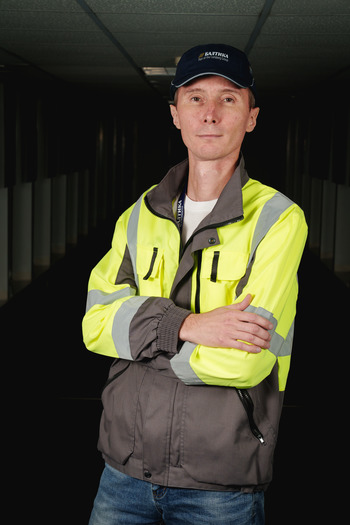
Игорь Егоров
Главный инженер
Отвечаю за стабильную работу оборудования всего завода
— «Балтика» — мое первое место работы. Я пришел
молодым специалистом на должность оператора линии. Рос наш завод,
и я развивался вместе с ним. И вот через несколько лет стал главным
инженером. Сейчас у меня в подчинении 38 человек.
Для меня самая любимая часть работы — запуск новинок. Для этого процесса необходимо произвести модернизацию оборудования, провести пусконаладочные работы и обучить людей.
Для меня самая любимая часть работы — запуск новинок. Для этого процесса необходимо произвести модернизацию оборудования, провести пусконаладочные работы и обучить людей.
Любимое пиво: Zatecky Gus
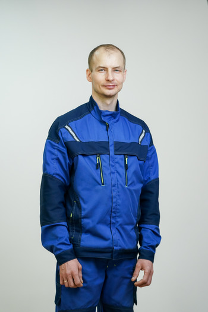
Владимир Житников
Инженер-электроник 1-й категории
Отвечаю за исправность оборудования
— 12 сентября 2023 года будет ровно 20 лет моей трудовой деятельности
на «Балтике». Важность моей работы неоспорима — от нее
зависит эффективность всего предприятия. На заводе постоянно меняется, добавляется
и улучшается оборудование, и я отвечаю за его обслуживание.
Я занимаюсь планированием. И моя самая любимая часть — именно
техническое обслуживание.
Любимое пиво: «Балтика 0»
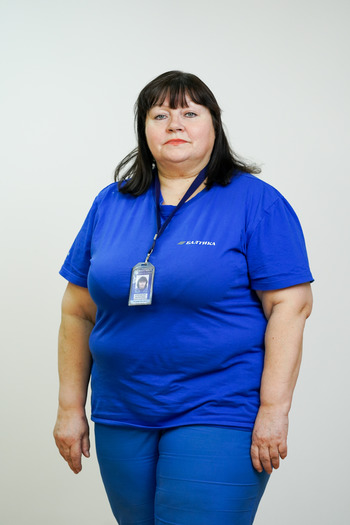
Валентина Ключикова
Техник по учету складской логистики
Отвечаю за приемку и оформление товарно-материальных
ценностей
— Мы с коллегами делаем все возможное, чтобы на складе был
порядок. В мои обязанности входят оформление документации, подготовка
к инвентаризации. За эти почти 20 лет завод стал для меня родным. Помню,
когда устроилась на «Балтику», рассчитывала на одну зарплату,
но неожиданно предложение сильно превысило мои ожидания. С тех пор работаю
с комфортом и каждый день прихожу на предприятие с хорошим
настроением — думаю, это главный показатель того, что я на своем месте.
Любимое пиво: «Балтика 7»
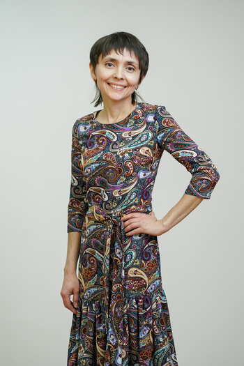
Яна Колиденкова
Инженер-химик
Отвечаю за качество сырья, упаковки, готовой продукции
— С того момента, как я пришла на «Балтику», прошло
уже 20 лет. Я отвечаю за входной контроль сырья и тароупаковочных
материалов, занимаюсь претензионной работой с поставщиками, провожу испытания пива
в ЦКТ и форфасах. Очень ценю «Балтику» как надежного и честного
работодателя, который заботится о своих сотрудниках. Это проявляется
и в безопасных условиях труда, и в социальных гарантиях,
и в том, что на заводе установлено современное лабораторное оборудование.
Любимый сорт пива:
Kronenbourg 1664 Blanc
Kronenbourg 1664 Blanc
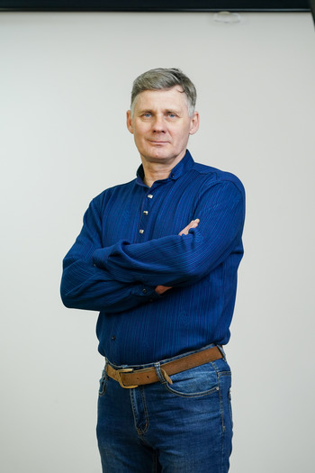
Константин Кудрявцев
Cлесарь-электрик
Отвечаю за исправность погрузочной и разгрузочной техники
— За время работы на «Балтике» я успел побывать
слесарем-электриком, бригадиром, инженером по выпуску автомобилей. Попробовал разные
должности и специальности, и везде было интересно, всегда изучал новое. Сейчас
занимаюсь обслуживанием техники и ее ремонтом. Моя задача — сделать
так, чтобы семь электрических и девять газовых погрузчиков работали без перебоев.
Любимое пиво: «Балтика 7»
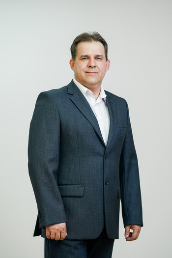
Дмитрий Никитин
руководитель группы технической поддержки
Отвечаю за работоспособность оборудования
— «Балтика» — мощная компания с именем, которая
доказала свою стабильность даже в нестабильном мире. Ее сила —
в команде. Я очень ценю наш коллектив, где каждый растет вместе с прогрессом
всего завода. Я приобрел здесь огромное количество знаний и умений, которые
с удовольствием вкладываю в развитие места, где тружусь. Получается такая
синергия.
Любимое пиво: «Балтика Темное»
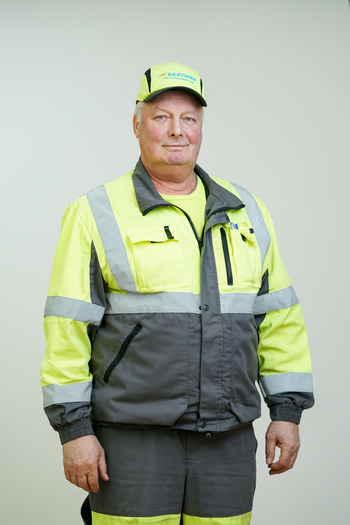
Игорь Новицкий
Водитель погрузчика
Отвечаю за погрузку продукции в автомобили и вагоны
— Свою должность я занимаю уже 20 лет. Отвечаю за своевременную
и качественную доставку, чтобы в продукции не было боя, упаковка осталась
целой и чистой, без оторванных этикеток. То, что я работаю
на «Балтике» очень давно, о многом говорит. Компания предлагает
достойную зарплату, социальные гарантии.
Я чувствую свою причастность к большому общему делу. В магазине всегда, даже если пиво не покупаю, смотрю на нашу полку. Обращаю внимание на срок годности, этикетку, а особенно на представленный ассортимент.
Я чувствую свою причастность к большому общему делу. В магазине всегда, даже если пиво не покупаю, смотрю на нашу полку. Обращаю внимание на срок годности, этикетку, а особенно на представленный ассортимент.
Любимое пиво: «Жигулевское»
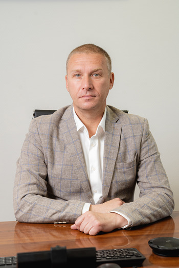
Антон Пеньков
Директор филиала «Балтика-Хабаровск»
Отвечаю за всё на заводе в Хабаровске
— Я работаю в компании с 2004 года. Начинал с оператора
фильтрационного отделения на производстве в Санкт-Петербурге. Прошел всю карьерную
лестницу и в 2020 году стал директором филиала в Хабаровске.
За 20 лет случилось много всего интересного, но самым значимым событием
считаю сам факт того, что еще до «Балтики» я осознанно выбрал
специальность пивовара.
Из огромного количество рабочих задач больше всего я люблю бывать на производстве. Особенную гордость испытал, когда мы запустили новинку «Дикий Восток».
На «Балтике» ценю нашу профессиональную команду, стабильность и постоянное совершенствование процессов. Именно это делает нашу компанию лучшей на рынке!
Из огромного количество рабочих задач больше всего я люблю бывать на производстве. Особенную гордость испытал, когда мы запустили новинку «Дикий Восток».
На «Балтике» ценю нашу профессиональную команду, стабильность и постоянное совершенствование процессов. Именно это делает нашу компанию лучшей на рынке!
Любимое пиво: «Балтика 3»
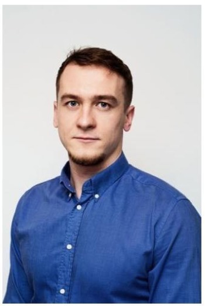
Александр Пресняков
Руководитель представительства компании в Китае
Отвечаю за экспорт в Китай
— Работаю на «Балтике» с октября 2020 года.
Я пришел в то время, когда в Китае уже действовали жесткие ковидные
ограничения, которые продлились до начала 2023 года. Они влияли буквально
на все: ограничивалась внутренняя и внешняя логистика, передвижения людей
в рамках регионов, городов и даже жилых районов, отношение потребителя
к импортной продукции было настороженным.
В этих условиях было крайне непросто доставлять нашу продукцию на рынок Китая. Поэтому каждое сообщение коллег из логистики о том, что «приказы на Китай согласованы», были как праздник. Надежда Семёнова, Татьяна Костюченко и Нина Коровина, привет!😊
Больше всего ценю то, что «Балтика» — это, в первую очередь, команда максимальных профессионалов, которые всегда делают чуть больше, чем нужно.
В этих условиях было крайне непросто доставлять нашу продукцию на рынок Китая. Поэтому каждое сообщение коллег из логистики о том, что «приказы на Китай согласованы», были как праздник. Надежда Семёнова, Татьяна Костюченко и Нина Коровина, привет!😊
Больше всего ценю то, что «Балтика» — это, в первую очередь, команда максимальных профессионалов, которые всегда делают чуть больше, чем нужно.
Любимое пиво: «Балтика 3»
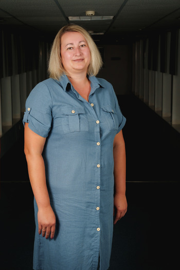
Надежда Семёнова
Ведущий специалист по железнодорожным перевозкам
Отвечаю за доставку продукции и ингредиентов
— Мои родители — железнодорожники. Можно сказать, я продолжила
династию. В моей зоне ответственности — доставка продукции
до потребителя по железной дороге и контейнерами на дальние территории,
а также обеспечение завода солодом и ячменем. Я контролирую, чтобы
транспортировка всегда была качественной и в срок, а для этого много
взаимодействую со складской логистикой и смежными отделами. Общение —
моя любимая часть работы!
Любимое пиво: «Балтика 0»
и «Балтика 7»
и «Балтика 7»
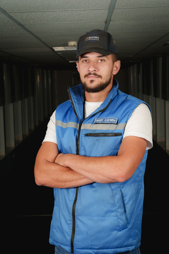
Николай Урупа
Главный энергетик
Отвечаю за электроснабжение предприятия
— Я пришел на завод инженером по энергетическим процессам
в 2016 году. При устройстве на работу хотел получить опыт на крупном
предприятии, и возможность карьерного роста не была для меня определяющей.
В итоге и интересный опыт получил, и вырос до главного энергетика.
От энергетики напрямую зависит функционирование производства, поэтому, конечно, я чувствую огромную ответственность. Мне нравится моя работа, и любая — даже сложная — задача решается легко. Особенно когда с тобой такая дружная команда.
От энергетики напрямую зависит функционирование производства, поэтому, конечно, я чувствую огромную ответственность. Мне нравится моя работа, и любая — даже сложная — задача решается легко. Особенно когда с тобой такая дружная команда.
Любимое пиво: Kronenbourg 1664 Blanc
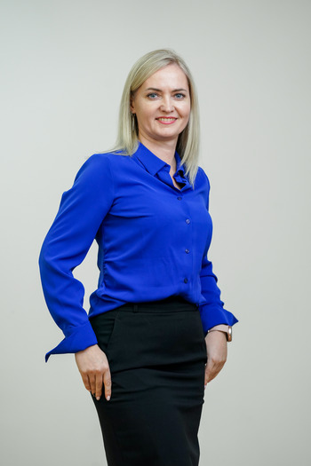
Алёна Шуст
Ведущий инженер-технолог
Отвечаю за электроснабжение предприятия
— В компании я прошла большой карьерный путь —
от техника до ведущего инженера-технолога. Моя ежедневная работа заключается
в том, чтобы контролировать производственные процессы. Иногда оперативно приходится
принимать очень ответственные решения, но я к этому готова.
«Балтику» ценю за то, что здесь работают профессионалы. Нас много,
и это вызывает гордость.
Любимое пиво: Zatecky Gus